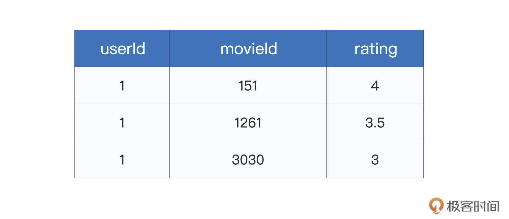
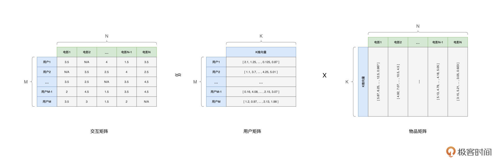
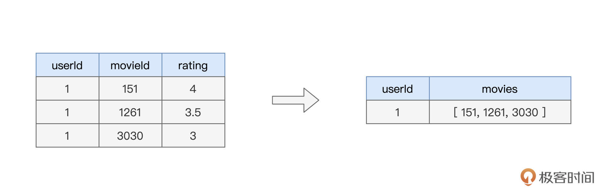
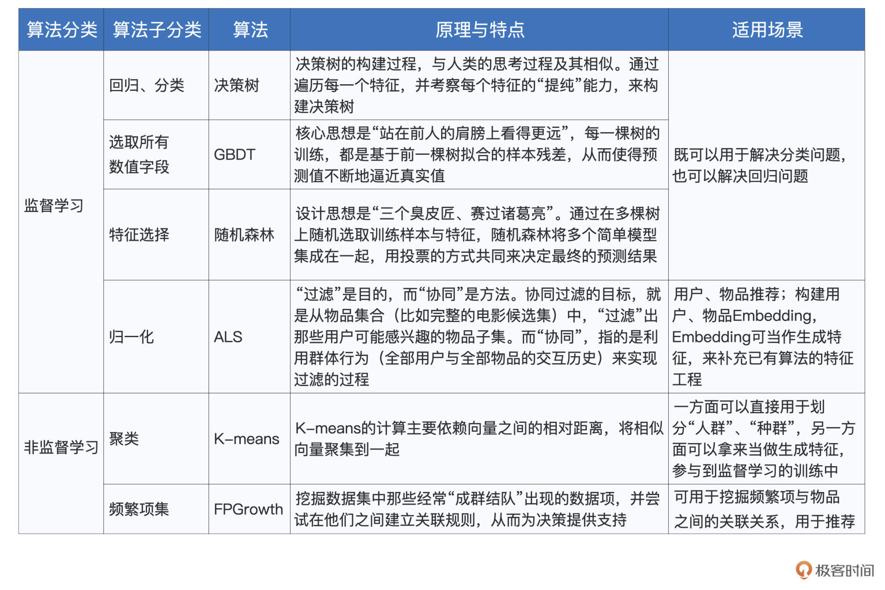

- 00 开篇词 入门Spark，你需要学会“三步走”.md.html
- 01 Spark：从“大数据的Hello World”开始.md.html
- 02 RDD与编程模型：延迟计算是怎么回事？.md.html
- 03 RDD常用算子（一）：RDD内部的数据转换.md.html
- 04 进程模型与分布式部署：分布式计算是怎么回事？.md.html
- 05 调度系统：如何把握分布式计算的精髓？.md.html
- 06 Shuffle管理：为什么Shuffle是性能瓶颈？.md.html
- 07 RDD常用算子（二）：Spark如何实现数据聚合？.md.html
- 08 内存管理：Spark如何使用内存？.md.html
- 09 RDD常用算子（三）：数据的准备、重分布与持久化.md.html
- 10 广播变量 & 累加器：共享变量是用来做什么的？.md.html
- 11 存储系统：数据到底都存哪儿了？.md.html
- 12 基础配置详解：哪些参数会影响应用程序稳定性？.md.html
- 13 Spark SQL：让我们从“小汽车摇号分析”开始.md.html
- 14 台前幕后：DataFrame与Spark SQL的由来.md.html
- 15 数据源与数据格式：DataFrame从何而来？.md.html
- 16 数据转换：如何在DataFrame之上做数据处理？.md.html
- 17 数据关联：不同的关联形式与实现机制该怎么选？.md.html
- 18 数据关联优化：都有哪些Join策略，开发者该如何取舍？.md.html
- 19 配置项详解：哪些参数会影响应用程序执行性能？.md.html
- 20 Hive + Spark强强联合：分布式数仓的不二之选.md.html
- 21 Spark UI（上）：如何高效地定位性能问题？.md.html
- 22 Spark UI（下）：如何高效地定位性能问题？.md.html
- 23 Spark MLlib：从“房价预测”开始.md.html
- 24 特征工程（上）：有哪些常用的特征处理函数？.md.html
- 25 特征工程（下）：有哪些常用的特征处理函数？.md.html
- 26 模型训练（上）：决策树系列算法详解.md.html
- 27 模型训练（中）：回归、分类和聚类算法详解.md.html
- 28 模型训练（下）：协同过滤与频繁项集算法详解.md.html
- 29 Spark MLlib Pipeline：高效开发机器学习应用.md.html
- 30 Structured Streaming：从“流动的Word Count”开始.md.html
- 31 新一代流处理框架：Batch mode和Continuous mode哪家强？.md.html
- 32 Window操作&Watermark：流处理引擎提供了哪些优秀机制？.md.html
- 33 流计算中的数据关联：流与流、流与批.md.html
- 34 Spark + Kafka：流计算中的“万金油”.md.html
- 用户故事 小王：保持空杯心态，不做井底之蛙.md.html
- 结束语 进入时间裂缝，持续学习.md.html
- 捐赠
28 模型训练（下）：协同过滤与频繁项集算法详解
你好，我是吴磊。
如果你平时爱刷抖音，或者热衷看电影，不知道有没有过这样的体验：这类影视App你用得越久，它就好像会读心术一样，总能给你推荐对胃口的内容。其实这种迎合用户喜好的推荐，离不开机器学习中的推荐算法。
今天是咱们模型训练的最后一讲，在今天这一讲，我们就结合两个有趣的电影推荐场景，为你讲解Spark MLlib支持的协同过滤与频繁项集算法。与上一讲一样，咱们还是先来贴出下面这张“全景图”，方便你对学过和即将要学的知识做到心中有数。

电影推荐场景
今天这一讲，咱们结合Kaggle竞赛中的MovieLens数据集，使用不同算法来构建简易的电影推荐引擎。尽管MovieLens数据集包含了多个文件，但课程中主要用到的，是ratings.csv这个文件。文件中的每条数据条目，记录的都是用户对于电影的打分，如下表所示。

其中第一列userId为用户ID，movieId表示电影ID，而rating就是用户对于电影的评分。像这样，同时存有用户与物品（电影）信息的二维表，我们把它们统称为“交互矩阵”，或是“共现矩阵”。你可能会疑惑，通过这么一份简单的二维表，我们能干些什么呢？
可别小瞧这份数据，与合适的模型算法搭配在一起，我就能根据它们构建初具模样的推荐引擎。在Spark MLlib框架下，至少有两种模型算法可以做到这一点，一个是协同过滤（Collaborative Filtering），另一个是频繁项集（Frequency Patterns）。其中，前者天生就是用来做推荐用的，而后者是一种常规的非监督学习算法，你可以结合数据特点，把这个算法灵活运用于推荐场景。
协同过滤
我们先说协同过滤，从字面上来说，“过滤”是目的，而“协同”是方式、方法。简单地说，协同过滤的目标，就是从物品集合（比如完整的电影候选集）中，“过滤”出那些用户可能感兴趣的物品子集。而“协同”，它指的是，利用群体行为（全部用户与全部物品的交互历史）来实现过滤。
这样说有些绕，实际上，协同过滤的核心思想很简单，就是“相似的人倾向于喜好相似的物品集”。
交互矩阵看上去简单，但其中隐含着大量的相似性信息，只要利用合适的模型算法，我们就能挖掘出用户与用户之间的相似性、物品与物品之间的相似性，以及用户与物品之间的相似性。一旦这些相似性可以被量化，我们自然就可以基于相似性去做推荐了。思路是不是很简单？
那么问题来了，这些相似性，该怎么量化呢？答案是：矩阵分解。

在数学上，给定维度为（M，N）的交互矩阵C，我们可以把它分解为两个矩阵U与I的乘积。其中，我们可以把U称作“用户矩阵”，它的维度为（M，K）；而I可以看作是“物品矩阵”，它的维度是（K，N）。
在用户矩阵与物品矩阵中，K是超参数，它是由开发者人为设定的。不难发现，对于用户矩阵U中的每一行， 都可以看作是用户的Embedding，也即刻画用户的特征向量。同理，物品矩阵中的每一列，也都可以看作是物品的Embedding，也即刻画物品的特征向量。
正所谓，万物皆可Embedding。对于任何事物，一旦它们被映射到同一个向量空间，我们就可以使用欧氏距离或是余弦夹角等方法，来计算他们向量之间的相似度，从而实现上述各种相似性（用户与用户、物品与物品、用户与物品）的量化。
基于相似度计算，我们就可以翻着花样地去实现各式各样的推荐。比方说，对于用户A来说，首先搜索与他/她最相似的前5个用户，然后把这些用户喜欢过的物品（电影）推荐给用户A，这样的推荐方式，又叫基于用户相似度的推荐。
再比如，对于用户A喜欢过的物品，我们搜索与这些物品最相似的前5个物品，然后把这些搜索到的物品，再推荐给用户A，这叫做基于物品相似度的推荐。
甚至，在一些情况下，我们还可以直接计算用户A与所有物品之间的相似度，然后把排名靠前的5个物品，直接推荐给用户A。
基于上述逻辑，我们还可以反其道而行之，从物品的视角出发，给物品（电影）推荐用户。不难发现，一旦完成Embedding的转换过程，我们就可以根据相似度计算来灵活地设计推荐系统。
那么，接下来的问题是，在Spark MLlib的框架下，我们具体要怎么做，才能从原始的互动矩阵，获得分解之后的用户矩阵、物品矩阵，进而获取到用户与物品的Embedding，并最终设计出简易的推荐引擎呢？
按照惯例，我们还是先上代码，用代码来演示这个过程。
import org.apache.spark.sql.DataFrame
// rootPath表示数据集根目录
val rootPath: String = _
val filePath: String = s"${rootPath}/ratings.csv"
var data: DataFrame = spark.read.format("csv").option("header", true).load(filePath)
// 类型转换
import org.apache.spark.sql.types.IntegerType
import org.apache.spark.sql.types.FloatType
// 把ID类字段转换为整型，把Rating转换为Float类型
data = data.withColumn(s"userIdInt",col("userId").cast(IntegerType)).drop("userId")
data = data.withColumn(s"movieIdInt",col("movieId").cast(IntegerType)).drop("movieId")
data = data.withColumn(s"ratingFloat",col("rating").cast(IntegerType)).drop("rating")
// 切割训练与验证数据集
val Array(trainingData, testData) = data.randomSplit(Array(0.8, 0.2))
第一步，还是准备训练样本，我们从ratings.csv创建DataFrame，然后对相应字段做类型转换，以备后面使用。第二步，我们定义并拟合模型，完成协同过滤中的矩阵分解。
import org.apache.spark.ml.recommendation.ALS
// 基于ALS（Alternative Least Squares，交替最小二乘）构建模型，完成矩阵分解
val als = new ALS()
.setUserCol("userIdInt")
.setItemCol("movieIdInt")
.setRatingCol("ratingFloat")
.setMaxIter(20)
val alsModel = als.fit(trainingData)
值得一提的是，在Spark MLlib的框架下，对于协同过滤的实现，Spark并没有采用解析解的方式（数学上严格的矩阵分解），而是用了一种近似的方式来去近似矩阵分解。这种方式，就是ALS（Alternative Least Squares，交替最小二乘）。
具体来说，给定交互矩阵C，对于用户矩阵U与物品矩阵I，Spark先给U设定一个初始值，然后假设U是不变的，在这种情况下，Spark把物品矩阵I的优化，转化为回归问题，不停地去拟合I，直到收敛。然后，固定住物品矩阵I，再用回归的思路去优化用户矩阵U，直至收敛。如此反复交替数次，U和I都逐渐收敛到最优解，Spark即宣告训练过程结束。
因为Spark把矩阵分解转化成了回归问题，所以我们可以用回归相关的度量指标来衡量ALS模型的训练效果，如下所示。
import org.apache.spark.ml.evaluation.RegressionEvaluator
val evaluator = new RegressionEvaluator()
// 设定度量指标为RMSE
.setMetricName("rmse")
.setLabelCol("ratingFloat")
.setPredictionCol("prediction")
val predictions = alsModel.transform(trainingData)
// 计算RMSE
val rmse = evaluator.evaluate(predictions)
验证过模型效果之后，接下来，我们就可以放心地从模型当中，去获取训练好的用户矩阵U和物品矩阵I。这两个矩阵中，保存的正是用户Embedding与物品Embedding。
alsModel.userFactors
// org.apache.spark.sql.DataFrame = [id: int, features: array<float>]
alsModel.userFactors.show(1)
/** 结果打印
+---+--------------------+
| id| features|
+---+--------------------+
| 10|[0.53652495, -1.0...|
+---+--------------------+
*/
alsModel.itemFactors
// org.apache.spark.sql.DataFrame = [id: int, features: array<float>]
alsModel.itemFactors.show(1)
/** 结果打印
+---+--------------------+
| id| features|
+---+--------------------+
| 10|[1.1281404, -0.59...|
+---+--------------------+
*/
就像我们之前说的，有了用户与物品的Embedding，我们就可以灵活地设计推荐引擎。如果我们想偷懒的话，还可以利用Spark MLlib提供的API来做推荐。具体来说，我们可以通过调用ALS Model的相关方法，来实现向用户推荐物品，或是向物品推荐用户，如下所示。
// 为所有用户推荐10部电影
val userRecs = alsModel.recommendForAllUsers(10)
// 为每部电影推荐10个用户
val movieRecs = alsModel.recommendForAllItems(10)
// 为指定用户推荐10部电影
val users = data.select(als.getUserCol).distinct().limit(3)
val userSubsetRecs = alsModel.recommendForUserSubset(users, 10)
// 为指定电影推荐10个用户
val movies = data.select(als.getItemCol).distinct().limit(3)
val movieSubSetRecs = alsModel.recommendForItemSubset(movies, 10)
好啦，到此为止，我们介绍了协同过滤的核心思想与工作原理，并使用Spark MLlib提供的ALS算法，实现了一个简单的电影推荐引擎。接下来，我们再来想一想，还有没有其他的思路来打造一个不一样的推荐引擎。
频繁项集
频繁项集（Frequency Patterns），是一种经典的数据挖掘算法，我们可以把它归类到非监督学习的范畴。频繁项集可以挖掘数据集中那些经常“成群结队”出现的数据项，并尝试在它们之间建立关联规则（Association Rules），从而为决策提供支持。
举例来说，基于对上百万条交易记录的统计分析，蔬果超市发现（“葱”，“姜”，“蒜”）这三种食材经常一起出现。换句话说，购买了“葱”、“姜”的人，往往也会再买上几头蒜，或是买了大葱的人，结账前还会再把姜、蒜也捎上。
在这个购物篮的例子中，（“葱”，“姜”，“蒜”）就是频繁项（Frequency Itemset），也即经常一起共现的数据项集合。而像（“葱”、“姜”->“蒜”）和（“葱”->“姜”、“蒜”）这样的关联关系，就叫做关联规则。
不难发现，基于频繁项与关联规则，我们能够提供简单的推荐能力。以刚刚的（“葱”，“姜”，“蒜”）为例，对于那些手中提着大葱、准备结账的人，精明的导购员完全可以向他/她推荐超市新上的河北白皮蒜或是山东大生姜。
回到电影推荐的场景，我们同样可以基于历史，挖掘出频繁项和关联规则。比方说，电影（“八佰”、“金刚川”、“长津湖”）是频繁项，而（“八佰”、“金刚川”->“长津湖”）之间存在着关联关系。那么，对于看过“八佰”和“金刚川”的人，我们更倾向于判断他/她大概率也会喜欢“长津湖”，进而把这部电影推荐给他/她。
那么，基于MovieLens数据集，在Spark MLlib的开发框架下，我们该如何挖掘其中的频繁项与关联规则呢？
首先第一步，是数据准备。在蔬果超市的例子中，超市需要以交易为单位，收集顾客曾经一起购买过的各种蔬果。为了在MovieLens数据集上计算频繁项集，我们也需要以用户为粒度，收集同一个用户曾经看过的所有电影集合，如下图所示。

要完成这样的转换，我们只需要一行代码即可搞定。
// data是从ratings.csv创建的DataFrame
val movies: DataFrame = data
// 按照用户分组
.groupBy("userId")
// 收集该用户看过的所有电影，把新的集合列命名为movieSeq
.agg(collect_list("movieId").alias("movieSeq"))
// 只保留movieSeq这一列，去掉其他列
.select("movieSeq")
// movies: org.apache.spark.sql.DataFrame = [movieSeq: array<string>]
movies.show(1)
/** 结果打印
+--------------------+
| movieSeq|
+--------------------+
|[151, 172, 236, 2...|
+--------------------+
*/
数据准备好之后，接下来，我们就可以借助Spark MLlib框架来完成频繁项集的计算。
import org.apache.spark.ml.fpm.FPGrowth
val fpGrowth = new FPGrowth()
// 指定输入列
.setItemsCol("movieSeq")
// 超参数，频繁项最小支持系数
.setMinSupport(0.1)
// 超参数，关联规则最小信心系数
.setMinConfidence(0.1)
val model = fpGrowth.fit(movies)
可以看到，定义并拟合频繁项集模型，还是比较简单的，用法上与其他模型算法大同小异。不过，这里有两个超参数需要特别关注，一个是由setMinSupport设置的最小支持系数，另一个是由setMinConfidence指定的最小信心系数。
最小支持系数，它用来设定频繁项的“选拔阈值”，这里我们把它设置为0.1。这是什么意思呢？
举例来说，在MovieLens数据集中，总共有7120个用户，相应地，movies这个DataFrame中，就有7120条电影集合数据。对于（“八佰”、“金刚川”、“长津湖”）这个组合来说，当且仅当它出现的次数大于712（7120 * 0.1），这个组合才会被算法判定为频繁项。换句话说，最小支持系数越高，算法挖掘出的频繁项越少、越可靠，反之越多。
相应地，最小信心系数，是用来约束关联规则的，例子中的取值也是0.1。我们再来举例说明，假设在7120条电影集合数据中，（“八佰”、“金刚川”）这对组合一起出现过1000次，那么要想（“八佰”、“金刚川”->“长津湖”）这条关联规则成立，则（“八佰”、“金刚川”、“长津湖”）这个组合必须至少出现过100次（1000 * 0.1）。同理，最小信心系数越高，算法挖掘出的关联规则越少、越可靠，反之越多。
模型训练好之后，我们就可以从中获取经常出现的频繁项与关联规则，如下所示。
model.freqItemsets.show(1)
/** 结果打印
+--------------------+----+
| items|freq|
+--------------------+----+
|[318, 593, 356, 296]|1465|
+--------------------+----+
*/
model.associationRules.show(1)
/** 结果打印
+--------------------+----------+------------------+
| antecedent|consequent| confidence|
+--------------------+----------+------------------+
|[592, 780, 480, 593]| [296]|0.8910463861920173|
+--------------------+----------+------------------+
*/
基于关联规则，我们就可以提供初步的推荐功能。比方说，对于看过（592、780、480、593）这四部电影的用户，我们可以把ID为296的电影推荐给他/她。
重点回顾
好啦，到此为止，模型训练的上、中、下三讲，我们就全部讲完啦！这三讲的内容较多，涉及的算法也很多，为了让你对他们有一个整体的把握，我把这些算法的分类、原理、特点与适用场景，都整理到了如下的表格中，供你随时回顾。

不难发现，机器学习的场景众多，不同的场景下，又有多种不同的算法供我们选择。掌握这些算法的原理与特性，有利于我们高效地进行模型选型与模型训练，从而去解决不同场景下的特定问题。
对于算法的调优与应用，还需要你结合日常的实践去进一步验证、巩固，也欢迎你在留言区分享你的心得与体会，让我们一起加油！
每课一练
对于本讲介绍的两种推荐思路（协同过滤与频繁项集），你能说说他们各自的优劣势吗？
你有什么学习收获或者疑问，都可以跟我交流，咱们留言区见。
© 2019 - 2023 Liangliang Lee. Powered by gin and hexo-theme-book.